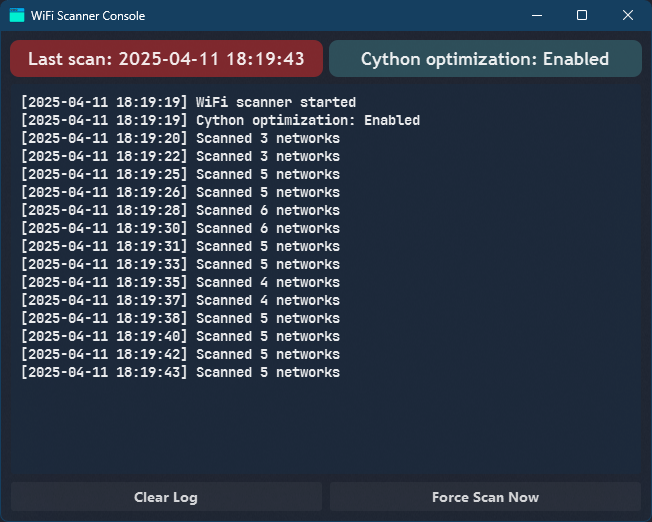

This section provides an overview of advanced features and components of the Wi-Fi Center application.
It covers the following topics:
Wi-Fi Center utilizes a separate background process for continuous network scanning, located in the
core/scanner/ directory. This process runs independently and provides network data to the main
application.
core/scanner/wifi_data.json. The main Wi-Fi Center application reads this file to populate its
network list.
wifi_scanner_cy.pyd
built from wifi_scanner_cy.pyx) for faster scanning performance if available. Falls back to a
pure Python implementation otherwise.The background scanner runs as a system tray application with its own icon. Right-clicking the tray icon provides the following options:
wifi_data.json file in the default application
(e.g., Notepad).Double-clicking the tray icon also opens the Scanner Console.
The "WiFi Scanner Console" window provides insights into the scanner's operation:

Closing the console window only hides it; the scanner continues running in the background. Use the "Exit" option in the tray menu to stop it completely.
The visual appearance of both the main Wi-Fi Center application and the Scanner Console can be customized using Qt Style Sheets (QSS).
styles/ directory
control the look of the main window, buttons, table, command bar, etc. Specific files like
win10.qss and win11.qss apply base styles depending on the operating system.
core/scanner/styles/ control the
appearance of the scanner's console window elements (log display, buttons, labels). It also uses
win10.qss and win11.qss for OS-specific base styling, including blur effects on
Windows 11.
You can modify these QSS files to change colors, fonts, borders, and other visual aspects.
Graphical assets used by the application are stored in the respective assets/ directories:
assets/): Contains icons used in the main Wi-Fi
Center window (e.g., master_icon.png, connect_to_wifi_icon.png).core/scanner/assets/): Contains icons specifically for the
background scanner, such as the tray icon (wifi_scanner_tray_icon.png) and the console window
icon (wifi_scanner_window_icon.png).docs/assets/): Contains CSS, JavaScript, and icons used
for rendering this documentation viewer.